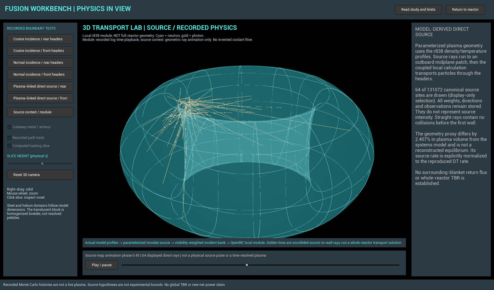

OPEN RESEARCH FOR HUMANITY
Explore the device.
Inspect the evidence.
Help improve the model.
Fusion Workbench connects conceptual reactor configurations, recorded physics calculations and a readable research history. It is an open research preview—not a working reactor or proof of net-electric fusion.

PUBLISHED SNAPSHOT, NOT LIVE COMPUTELoading publication status…
What works—and what does not
Software verification, conditional model results and experimental support are different evidence levels. Passing tests do not certify a reactor.
Latest validation checkpoint
A reproduced calculation is not the same as a validated measurement.
The existing OKTAVIAN lithium benchmark closely reproduces the archived calculation, while the primary neutron table and a legacy first-bin conversion expose unresolved differences. All bins, reported errors and source credits are retained; no blanket correction or new reactor performance is claimed.
Current research decision
The cooling hardware cannot be approved from hydraulics alone.
The latest candidate-linked local neutron calculation predicts about 2.71% lower tritium production with front headers than with rear headers. This is a conditional local design comparison—not the complete reactor’s breeding ratio, recovered fuel, or an electricity improvement.
Its source geometry is a declared proxy and differs by 2.407% in plasma volume from the systems model. The next gate is compatible breeder-benchmark evidence and a matched full-geometry source/material/return-flux calculation.
Progress history
Updates are added when reviewed evidence is published. No automatic research agent or public solver is implied by this feed.
Reproduce, challenge, contribute
Read and reproduce
The source snapshot contains the original application code, cleared reports, parameter sets, tests and reproduction scripts. Original project code is MIT-licensed; third-party terms remain separate.
Propose a specific test
Identify a configuration, cite the closest existing work, propose one change and define a test that could reject it. Share only data you have permission to redistribute.
Public source repository · Issues and contributions
Public issues and pull requests are open for review. A proposal download does not submit it.
Hosting and trust boundaries
This static viewer can be served by GitHub Pages without keeping the research computer on. It displays completed results and runs graphics in your browser. It cannot run PROCESS/OpenMC, execute submissions, contact the research workstation, or invent live run progress.
Download the Windows Unreal preview and checksums. This runs on your PC, not on GitHub Pages. The native executable is the reviewed 0.5.0 preview; this release adds public hosting and source access.
No tracking analytics, credentials, private correspondence, raw execution logs or private Git history are included in this site.